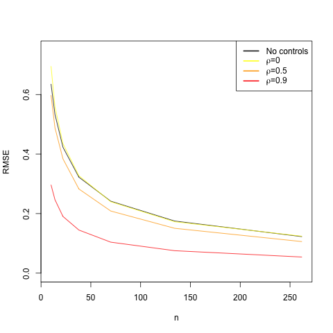

rm(list=ls())
set.seed(20140714)
N = 2000
N.treated = 1000
Replications = 10000
true.treatment.effect = 1
# Create pre-treatment covariates
owns.id.card = rbinom(n = N, size = 1, prob = .18)
has.formal.schooling = rbinom(n = N, size = 1, prob = .6)
age = round(rnorm(n = N, mean = 37, sd = 16))
age[age<18] = 18
age[age>65] = 65
TV.access = rbinom(n = N, size = 1, prob = .7)
epsilon = rnorm(n = N, mean = 0, sd = 2)
# Create potential outcomes correlated with pre-treatment covariates
Y0 = round(owns.id.card + 2*has.formal.schooling + 3*TV.access + log(age) + epsilon)
Y1 = Y0 + true.treatment.effect
# Assign treatment repeatedly
Z.mat = replicate(Replications, ifelse(1:N %in% sample(1:N, N.treated), 1, 0))
# Generate observed outcomes
Y.mat = Y1 * Z.mat + Y0 * (1 - Z.mat)
diff.in.means = function(Y, Z) {
coef(lm(Y ~ Z))[2]
}
ols.adjust = function(Y, Z) {
coef(lm(Y ~ Z + owns.id.card + has.formal.schooling + age + TV.access))[2]
}
unadjusted.estimates = rep(NA, Replications)
adjusted.estimates = rep(NA, Replications)
for (i in 1:Replications) {
unadjusted.estimates[i] = diff.in.means(Y.mat[,i], Z.mat[,i])
adjusted.estimates[i] = ols.adjust(Y.mat[,i], Z.mat[,i])
}
# Estimated variability (standard deviation) of each estimator
sd.of.unadj = sd(unadjusted.estimates)
sd.of.unadj
sd.of.adj = sd(adjusted.estimates)
sd.of.adj
# Estimated bias of each estimator
mean(unadjusted.estimates) - true.treatment.effect
mean(adjusted.estimates) - true.treatment.effect
# Margin of error (at 95% confidence level) for each estimated bias
1.96 * sd.of.unadj / sqrt(Replications)
1.96 * sd.of.adj / sqrt(Replications)10 Things to Know About Covariate Adjustment
This guide will help you think through when it makes sense to try to “control for other things” when estimating treatment effects using experimental data. We focus on the big ideas and provide examples in R.
What is covariate adjustment?
“Covariates” are baseline characteristics of your experimental subjects. When you run an experiment, you are primarily interested in collecting data on outcome variables that your intervention may affect, e.g. expenditure decisions, attitudes toward democracy, or contributions for a public good in a lab experiment. But it’s also a good idea to collect data on baseline characteristics of subjects before treatment assignment occurs, e.g. gender, level of education, or ethnic group. If you do this you can explore how treatment effects vary with these characteristics (see 10 Things to Know About Heterogeneous Treatment Effects). But doing this also lets you perform covariate adjustment.
Covariate adjustment is another name for controlling for baseline variables when estimating treatment effects. Often this is done to improve precision. Subjects’ outcomes are likely to have some correlation with variables that can be measured before random assignment. Accounting for variables like gender will allow you to set aside the variation in outcomes that is predicted by these baseline variables, so that you can isolate the effect of treatment on outcomes with greater precision and power.
Covariate adjustment can be a cheaper route to improved precision than increasing the number of subjects in the experiment. Partly for that reason, researchers often collect extensive data on covariates before random assignment. Pre-tests (measures that are analogous to the outcome variable but are restricted to time periods before random assignment) may be especially valuable for predicting outcomes, and baseline surveys can ask subjects about other background characteristics.
Controlling for covariates at the design stage (blocking)
The best way to control for covariates is to use block randomization to do it at the design stage even before you start your experiment. Block randomization enables you to create treatment and control groups that are balanced on certain covariates. For example, you might expect that gender and income help predict the outcome variable. Block randomization can ensure that the treatment and control groups have equal proportions of female/high-income, female/low-income, male/high-income, and male/low-income populations. When the blocking variables help predict outcomes, blocking improves precision by preventing chance correlations between treatment assignment and baseline covariates.
For more information on blocking and how to implement it in R, see 10 Things You Need to Know About Randomization. The precision gains from blocking (relative to covariate adjustment without blocking) tend to be greatest when sample sizes are small (Miratrix, Sekhon, and Yu 2013).
When blocking is done to improve precision, estimated standard errors should take the blocking into account. (Otherwise, the SEs will tend to be conservative because they won’t give you credit for the precision improvement that blocking achieved.) One simple and commonly used method is to regress the outcome on the treatment assignment dummy variable as well as block dummies. When the probability of assignment to treatment is constant across blocks, including the block dummies in the regression doesn’t change the estimated treatment effect, but tends to give a more accurate estimate of the SE.1
If the probability of assignment to treatment varies by block, then you need to control for these unequal probabilities in order to get unbiased estimates of average treatment effects. 10 Things You Need to Know About Randomization discusses ways to do this.
How to do it in a regression
Sometimes you do not have the opportunity to implement a blocked experimental design (for example, if you join a project after random assignment occurs) or you would prefer to simplify your randomization scheme to reduce opportunities for administrative error. You can still adjust for covariates on the back end by using multiple regression. Remember that in a bivariate regression—when you regress your outcome on just your treatment indicator—the coefficient on treatment is just a difference-in-means. This simple method gives an unbiased estimate of the average treatment effect (ATE). When we add baseline covariates that are correlated with outcomes to the model, the coefficient on treatment is an approximately unbiased estimate of the ATE that tends to be more precise than bivariate regression.
To adjust for covariates through multiple regression, use the model:
\[Y_i = \alpha + \beta Z_i + \gamma X_i + \epsilon_i\]
where \(Y_i\) is the outcome variable, \(Z_i\) is the treatment indicator, and \(X_i\) is a vector of one or more covariates. The remainder \(\epsilon_i\) is your disturbance term—the leftover unexplained noise.
When the treatment and control groups are of unequal size, the precision gains from covariate adjustment may be greater if you include interactions between treatment and the covariates (see this blog post for more discussion). For ease of interpretation, recenter the covariates to have zero mean:
\[Y_i = \alpha + \beta Z_i + \gamma W_i + \delta Z_i*W_i + \epsilon_i\]
where \(W_i = X_i - \overline{X}\) and \(\overline{X}\) is the mean value of \(X_i\) for the entire sample.
If subjects receive different probabilities of assignment to treatment based on their covariates, then our estimation method needs to account for this (again, see 10 Things You Need to Know About Randomization for details).
Why to do it
It isn’t absolutely necessary to control for covariates when estimating the average treatment effect in an RCT that assigns every subject the same probability of receiving the treatment. The unadjusted treatment–control difference in mean outcomes is an unbiased estimator of the ATE. However, covariate adjustment tends to improve precision if the covariates are good predictors of the outcome.2
In large samples, random assignment tends to produce treatment and control groups with similar baseline characteristics. Still, by the “luck of the draw,” one group may be slightly more educated, or one group may have slightly higher voting rates in previous elections, or one group may be slightly older on average. For this reason, the estimated ATE is subject to “sampling variability,” meaning you’ll get estimates of the ATE that were produced by an unbiased method but happened to miss the mark.3 A high sampling variability contributes to noise (imprecision), not bias.
Controlling for these covariates tends to improve precision if the covariates are predictive of potential outcomes. Take a look at the following example, which is loosely based on Giné and Mansuri (2012), an experiment on female voting behavior in Pakistan. In this experiment, the authors randomized an information campaign to women in Pakistan to study its effects on their turnout behavior, the independence of their candidate choice, and their political knowledge. They carried out a baseline survey which provided them with several covariates.
The following code imitates this experiment by creating fake data for four of the covariates they collect: whether the woman owns an identification card, whether the woman has formal schooling, the woman’s age, and whether the woman has access to TV. It also creates two potential outcomes (the outcomes that would occur if she were assigned to treatment and if not) for a measure of the extent to which a woman’s choice of candidate was independent of the opinions of the men in her family. The potential outcomes are correlated with all four covariates, and the built-in “true” treatment effect on the independence measure here is 1. To figure out whether our estimator is biased or not, we simulate 10,000 replications of our experiment. On each replication, we randomly assign treatment and then regress the observed outcome \(Y\) on the treatment indicator \(Z\), with and without controlling for covariates. Thus, we are simulating two methods (unadjusted and covariate-adjusted) for estimating the ATE. To estimate the bias of each method, we take the difference between the average of the 10,000 simulated estimates and the “true” treatment effect.
Both methods—with and without covariates—yield the true treatment effect of 1 on average. When we ran the regression without covariates, our estimated ATE averaged 1.0008 across the 10,000 replications, and with covariates, it averaged 1.0003. Notice that the regression-adjusted estimate is essentially unbiased even though our regression model is misspecified—we control for age linearly when the true data generating process involves the log of age.4
The real gains come in the precision of our estimates. The standard error (the standard deviation of the sampling distribution) of our estimated ATE when we ignore covariates is 0.121. When we include covariates in the model, our estimate becomes a bit tighter: the standard error is 0.093. Because our covariates were prognostic of our outcome, including them in the regression explained some noise in our data so that we could tighten our estimate of ATE.
When will it help?
When is adjusting for covariates most likely to improve precision?
Covariate adjustment will be most helpful when your covariates are strongly predictive (or “prognostic”) of your outcomes. Covariate adjustment essentially enables you to make use of information about relationships between baseline characteristics and your outcome so that you can better identify the relationship between treatment and the outcome. But if the baseline characteristics are only weakly correlated with the outcome, covariate adjustment won’t do you much good. The covariates you will want to adjust for are the ones that are strongly correlated with outcomes.
The following graph demonstrates the relationship between how prognostic your covariate is and the gains you get from adjusting for it. On the x-axis is the sample size, and on the y-axis is the root mean squared error (RMSE), the square root of the average squared difference between the estimator and the true ATE. We want our RMSE to be small, and covariate adjustment should help us reduce it.
rm(list=ls())
library(MASS) # for mvrnorm()
set.seed(1234567)
num.reps = 10000
# True treatment effect is 0 for every unit
adj.est = function(n, cov.matrix, treated) {
Y.and.X = mvrnorm(n, mu = c(0, 0), Sigma = cov.matrix)
Y = Y.and.X[, 1]
X = Y.and.X[, 2]
coef(lm(Y ~ treated + X))[2]
}
unadj.est = function(n, treated) {
Y = rnorm(n)
coef(lm(Y ~ treated))[2]
}
rmse = function(half.n, rho = 0, control = TRUE) {
treated = rep(c(0, 1), half.n)
n = 2 * half.n
if (control) {
cov.matrix = matrix(c(1, rho, rho, 1), nrow = 2, ncol = 2)
return( sqrt(mean(replicate(num.reps, adj.est(n, cov.matrix, treated)) ^ 2)) )
}
else {
return( sqrt(mean(replicate(num.reps, unadj.est(n, treated)) ^ 2)) )
}
}
half.n = c(5, 7, 11, 19, 35, 67, 131)
n = 2 * half.n
E = sapply(half.n, rmse, control = FALSE)
E0 = sapply(half.n, rmse, rho = 0)
E1 = sapply(half.n, rmse, rho = 0.5)
E2 = sapply(half.n, rmse, rho = 0.9)
plot(n, E, type = "l", ylab = "RMSE", xlim = c(min(n),max(n)), ylim = c(0,.75))
lines(n, E0, col = "yellow")
lines(n, E1, col = "orange")
lines(n, E2, col = "red")
legend(x = 'topright',
c("No controls",
expression(paste(rho, "=0")), expression(paste(rho, "=0.5")),
expression(paste(rho, "=0.9"))),
col=c("black", "yellow","orange", "red"), lty = 1, lwd=2)
The black line shows the RMSE when we don’t adjust for a covariate. The red line shows the RMSE when we adjust for a highly prognostic covariate (the correlation between the covariate and the outcome is 0.9). You can see that the red line is always below the black line, which is to say that the RMSE is lower when you adjust for a prognostic covariate. The orange line represents the RMSE when we adjust for a moderately prognostic covariate (the correlation between the covariate and the outcome is 0.5). We still are getting gains in precision relative to the black line, but not nearly as much as we did with the red line. Finally, the yellow line shows what happens if you control for a covariate that is not at all predictive of the outcome. The yellow line is almost identical to the black line. You received no improvement in precision by controlling for a non-prognostic covariate; in fact, you paid a slight penalty because you wasted a degree of freedom, which is especially costly when the sample size is small. This exercise demonstrates that you’ll get the most gains in precision by controlling for covariates that strongly predict outcomes.
How can you know which covariates are likely to be prognostic before launching your experiment? Prior experiments or even observational studies can offer guidance about which baseline characteristics best predict outcomes.
Control for prognostic covariates regardless of whether they show imbalances
Covariates should generally be chosen on the basis of their expected ability to help predict outcomes, regardless of whether they show “imbalances” (i.e., regardless of whether there are any noteworthy differences between the treatment group and control group in average values or other aspects of covariate distributions). There are two reasons for this recommendation:
Frequentist statistical inference (standard errors, confidence intervals, p-values, etc.) assumes that the analysis follows a pre-specified strategy. Choosing covariates on the basis of observed imbalances makes it more difficult to obtain inferences that reflect your actual strategy. For example, suppose you choose not to control for gender because the treatment and control groups have similar gender composition, but you would have controlled for gender if there’d been a noticeable imbalance. Typical methods for estimating standard errors will incorrectly assume that you’d never control for gender no matter how much imbalance you saw.
Adjusting for a highly prognostic covariate tends to improve precision, as we explained above. To receive due credit for this precision improvement, you should adjust for the covariate even if there’s no imbalance. For example, suppose gender is highly correlated with your outcome, but it happens that the treatment group and control group have exactly the same gender composition. In this case, the unadjusted estimate of the ATE will be exactly the same as the adjusted estimate from a regression of the outcome on treatment and gender, but their standard errors will differ. The SE of the unadjusted estimate tends to be larger because it assumes that even if the treatment and control groups had very different gender compositions, you’d still use the unadjusted treatment–control difference in mean outcomes (which would likely be far from the true ATE in that case). If you pre-specify that you’ll adjust for gender regardless of how much or how little imbalance you see, you’ll tend to get smaller SEs, tighter confidence intervals, and more powerful significance tests.
Assuming that random assignment was implemented correctly, should examination of imbalances play any role in choosing which covariates to adjust for? Here’s a sampling of views:
Mutz, Pemantle, and Pham (2017) argue that, unless there is differential attrition, the practice of selecting covariates on the basis of observed imbalances is “not only unnecessary” but “not even helpful … and may in fact be damaging,” because it invalidates confidence intervals, worsens precision (relative to pre-specified adjustment for prognostic covariates), and opens the door to fishing.
Permutt (1990), using theory and simulations to study specific scenarios, finds that when a balance test is used to decide whether to adjust for a covariate, the significance test for the treatment effect is conservative (i.e., it has a true Type I error probability below its nominal level). He writes, “Greater power can be achieved by always adjusting for a covariate that is highly correlated with the response regardless of its distribution between groups.” However, he doesn’t completely rule out considering observed imbalances: “Choosing covariates on the basis of the difference between the means in the treatment and control groups is not irrational. After all, some type I errors may be more serious than others. Reporting a significant difference in outcome which can be explained away as the effect of a covariate may be a more embarrassing error than reporting one that happens to go away on replication but without an easy explanation. Similar considerations may apply to type II errors. A positive result that depends on adjustment for a covariate may be seen as less convincing than a positive two-sample test anyway, so that the error of failing to draw such a positive conclusion may be less serious. These justifications, however, come from outside the formal theory of testing hypotheses.”
Altman (2005) writes, “It seems far preferable to choose which variables to adjust for without regard to the actual data set to hand.” He recommends controlling for highly prognostic covariates, as well as any that were used in blocking. However, he also discusses a dilemma: “In practice, imbalance may arise when the possible need for adjustment has not been anticipated. What should the researchers do? They might choose to ignore the imbalance; as noted, this would be entirely proper. The difficulty then is one of credibility. Readers of their paper (including reviewers and editors) may question whether the observed finding has been influenced by the unequal distribution of one or more baseline covariates. It is still possible, and arguably advisable, to carry out an adjusted analysis, but now with the explicit acknowledgment that this is an exploratory rather than definitive analysis, and that the unadjusted analysis should be taken as the primary one. Obviously, if the simple and adjusted analyses yield substantially the same result, then there is no difficulty of interpretation. This will usually be the case. However, if the results of the two analyses differ, then there is a real problem. The existence of such a discrepancy must cast some doubt on the veracity of the overall (unadjusted) result. The situation is similar to the difficulties of interpretation that arise with unplanned subgroup comparisons. One suggestion in such circumstances is to try to mimic what would have been done if the problem had been anticipated, namely to adjust not for variables that are observed to be unbalanced, but for all variables that would have been identified in advance as prognostic. An independent source could be used to identify such variables. Alternatively, the trial data could be used to determine which variables are prognostic. This strategy too could be prespecified in the study protocol. Because this analysis would be performed conditionally on the observed imbalance, it does not remove bias and thus cannot be considered fully satisfactory.”
Tukey (1991) notes that observed imbalances may justify adjustment as a robustness check: Although “most statisticians” would accept an analysis of a randomized clinical trial that doesn’t adjust for covariates, “Some clinicians, and some statisticians it would seem, would like to be more sceptical, (perhaps as a supplemental analysis) asking for an analysis that takes account of observed imbalances in these recorded covariates. Feeling more secure about the results of such an analysis is indeed appropriate, since the degree of protection against either the consequences of inadequate randomization or the (random) occurrence of an unusual randomization is considerably increased by adjustment. Greater security, rather than increased precision … will often be the basic reason for covariance adjustment in a randomized trial. … The main purpose of allowing [adjusting] for covariates in a randomized trial is defensive: to make it clear that analysis has met its scientific obligations.”
Some statisticians argue that our inferences should be conditional on a measure of covariate imbalance—in other words, when assessing the bias, variance, and mean squared error of a point estimate or the coverage probability of a confidence interval, instead of considering all possible randomizations, it may be more relevant to consider only those randomizations that would yield a covariate imbalance similar to the one we observe. From this perspective, observed imbalances may be relevant to the choice of estimator.5
Lin, Green, and Coppock (2016) write: “Covariates should generally be chosen on the basis of their expected ability to help predict outcomes, regardless of whether they appear well-balanced or imbalanced across treatment arms. But there may be occasions when the covariate list specified in the PAP [pre-analysis plan] omitted a potentially important covariate (due to either an oversight or the need to keep the list short when N is small) with a nontrivial imbalance. Protection against ex post bias (conditional on the observed imbalance) is then a legitimate concern.” However, they recommend that if observed imbalances are allowed to influence the choice of covariates, “the balance checks and decisions about adjustment should be finalized before we see unblinded outcome data,” “the direction of the observed imbalance (e.g., whether the treatment group or the control group appears more advantaged at baseline) should not be allowed to influence decisions about adjustment,” and the originally pre-specified estimator should “always be reported and labeled as such, even if alternative estimates are also reported.”6
When not to do it
It is a bad idea to adjust for covariates when you think those covariates could have been influenced by your treatment. This is one of the reasons that many covariates are collected from baseline surveys; sometimes covariates that are collected from surveys after intervention could reflect the effects of the treatment rather than underlying characteristics of the subject. Adjusting for covariates that are affected by the treatment—“post-treatment” covariates—can cause bias.
Suppose, for example, that Giné and Mansuri had collected data on how many political rallies a woman attended after receiving the treatment. In estimating the treatment effect on independence of political choice, you may be tempted to include this variable as a covariate in your regression. But including this variable, even if it strongly predicts the outcome, may distort the estimated effect of the treatment.
Let’s create this fake variable, which is correlated (like the outcome measure) with baseline covariates and also with treatment. Here, by construction, the treatment effect on number of political rallies attended is 2. When we included the rallies variable as a covariate, the estimated average treatment effect on independence of candidate choice averaged 0.54 across the 10,000 replications. Recall that the true treatment effect on this outcome is 1. This is severe bias, all because we controlled for a post-treatment covariate!7 This bias results from the fact that the covariate is correlated with treatment.
# Create post-treatment covariate that's correlated with pre-treatment covariates
rallies0 = round(.5*owns.id.card + has.formal.schooling + 1.5*TV.access + log(age))
rallies1 = rallies0 + 2
rallies.mat = rallies1 * Z.mat + rallies0 * (1-Z.mat)
# Estimate ATE with new model that includes the post-treatment covariate
adjust.for.post = function(Y, Z, X) {
coef(lm(Y ~ Z + X + owns.id.card + has.formal.schooling + age + TV.access))[2]
}
post.adjusted.estimates = rep(NA, Replications)
for (i in 1:Replications) {
post.adjusted.estimates[i] = adjust.for.post(Y.mat[,i], Z.mat[,i], rallies.mat[,i])
}
# Estimated bias of the new estimator
mean(post.adjusted.estimates) - true.treatment.effect
# Margin of error (at 95% confidence level) for the estimated bias
1.96 * sd(post.adjusted.estimates) / sqrt(Replications)Just because you should not adjust for post-treatment covariates does not mean you cannot collect covariate data post-treatment, but you must exercise caution. Some measures could be collected post-treatment but are unlikely to be affected by treatment (e.g., age and gender). Be careful about measures that may be subject to evaluation-driven effects, though: for example, treated women may be more acutely aware of the expectation of political participation and may retrospectively report that they were more politically active than they actually were several years prior.
Concerns about small-sample bias
In small samples, regression adjustment may produce a biased estimate of the average treatment effect.8 Some simulations have suggested that this bias tends to be negligible when the number of randomly assigned units is greater than twenty (Green and Aronow 2011). If you’re working with a small sample, you may want to use an unbiased covariate adjustment method such as post-stratification (splitting the sample into subgroups based on the values of one or more baseline covariates, computing the treatment–control difference in mean outcomes for each subgroup, and taking a weighted average of these subgroup-specific treatment effect estimates, with weights proportional to sample size) (Miratrix, Sekhon, and Yu 2013).
How to make your covariate adjustment decisions transparent
In the interests of transparency, if you adjust for covariates, pre-specify your models and report both unadjusted and covariate-adjusted estimates.
The simulations above have demonstrated that results may change slightly or not-so-slightly depending on which covariates you choose to include in your model. We’ve highlighted some rules of thumb here: include only pre-treatment covariates that are predictive of outcomes. Deciding which covariates to include, though, is often a subjective rather than an objective enterprise, so another rule of thumb is to be totally transparent about your covariate decisions. Always include the simplest model—the simple regression of outcome on treatment without controlling for covariates—in your paper or appendix to supplement the findings of your model including covariates.
Another way to minimize your readers’ concern that you went fishing for the particular combination of covariates that gave results favorable to your hypotheses is to pre-specify your models in a pre-analysis plan.9 This gives you the opportunity to explain before you see the findings which pre-treatment covariates you expect to be predictive of the outcome. You can even write these regressions out in R using fake data, as done here, so that when your results from the field arrive, all you need to do is run your code on the real data. These efforts are a useful way of binding your own hands as a researcher and improving your credibility.
Covariates can help you investigate the integrity of the random assignment
Sometimes it is unclear whether random assignment actually occurred (or whether it occurred using the procedure that the researcher envisions). For example, when scholars analyze naturally occurring random assignments (e.g., those conducted by a government agency), it is useful to assess statistically whether the degree of imbalance between the treatment and control groups is within the expected margin of error. One statistical test is to regress treatment assignment on all of the covariates and calculate the F-statistic. The significance of this statistic can be assessed by simulating a large number of random assignments and for each one calculating the F-statistic; the resulting distribution can be used to calculate the p-value of the observed F-statistic. For example, if 10,000 simulations are conducted, and just 30 simulations generate an F-statistic larger than what one actually obtained from the data, the p-value is 0.003, which suggests that the observed level of imbalance is highly unusual. In such cases, one may wish to investigate the randomization procedure more closely.
For further reading, see Athey and Imbens (2017), Gerber and Green (2012, chap. 4), Hennessy et al. (2016), Judkins and Porter (2016), Raudenbush (1997), and Wager et al. (2016).
References
Altman, Douglas G. 2005. “Covariate Imbalance, Adjustment For.” In Encyclopedia of Biostatistics.
Athey, Susan, and Guido W. Imbens. 2017. “Handbook of Economic Field Experiments.” In, edited by E. Duflo and A. Banerjee.
Bruhn, Miriam, and David McKenzie. 2013. “In Pursuit of Balance: Randomization in Practice in Development Field Experiments.” American Economic Journal: Applied Economics 1 (4): 200–232.
Cox, D. R., and N. Reid. 2000. The Theory of the Design of Experiments.
Efron, Bradley. 1978. “Controversies in the Foundations of Statistics.” American Mathematical Monthly 85: 231–46.
Freedman, David A. 2008. “On Regression Adjustments in Experiments with Several Treatments.” Annals of Applied Statistics 2: 176–96.
Gerber, Alan S., and Donald P. Green. 2012. Field Experiments: Design, Analysis, and Interpretation. W.W. Norton.
Giné, Xavier, and Ghazala Mansuri. 2012. “Together We Will: Experimental Evidence on Female Voting Behavior in Pakistan.” American Economic Journal: Applied Economics 10 (1): 207–35.
Green, Donald P., and Peter M. Aronow. 2011. “Analyzing Experimental Data Using Regression: When Is Bias a Practical Concern?”
Hennessy, Jonathan, Tirthankar Dasgupta, Luke Miratrix, Cassandra Pattanayak, and Pradipta Sarkar. 2016. “A Conditional Randomization Test to Account for Covariate Imbalance in Randomized Experiments.” Journal of Causal Inference 4: 61–80.
Holt, D., and T. M. F. Smith. 1979. “Post Stratification.” Journal of the Royal Statistical Society, Series A (General) 142: 33–46.
Judkins, David R., and Kirstin E. Porter. 2016. “Robustness of Ordinary Least Squares in Randomized Clinical Trials.” Statistics in Medicine 35: 1763–73.
Lin, Winston, Donald P. Green, and Alexander Coppock. 2016. Standard Operating Procedures for Don Green’s Lab at Columbia. Version 1.05.
Lohr, Sharon. 2010. Sampling: Design and Analysis. 2nd ed. Cengage Learning.
Miratrix, Luke W., Jasjeet S. Sekhon, and Bin Yu. 2013. “Adjusting Treatment Effect Estimates by Post-Stratification in Randomized Experiments.” Journal of the Royal Statistical Society, Series B 75: 369–96.
Mutz, Diana C., Robin Pemantle, and Philip Pham. 2017. “The Perils of Balance Testing in Experimental Design: Messy Analyses of Clean Data.”
Olken, Benjamin A. 2015. “Promises and Perils of Pre-Analysis Plans.” Journal of Economic Perspectives 29 (3): 61–80.
Permutt, Thomas. 1990. “Testing for Imbalance of Covariates in Controlled Experiments.” Statistics in Medicine 9: 1455–62.
Raudenbush, Stephen W. 1997. “Statistical Analysis and Optimal Design for Cluster Randomized Trials.” Psychological Methods 2 (173-185).
Royall, Richard M. 1976. “Current Advances in Sampling Theory: Implications for Human Observational Studies.” American Journal of Epidemiology 104: 463–74.
Tukey, John W. 1991. “Use of Many Covariates in Clinical Trials.” International Statistical Review 59 (123-137).
Wager, Stefan, Wenfei Du, Jonathan Taylor, and Robert Tibshirani. 2016. “High-Dimensional Regression Adjustments in Randomized Experiments.” Proceedings of the National Academy of Sciences 113: 12673–78.
Footnotes
A brief review of bias and precision: Imagine replicating the experiment many times (without changing the experimental sample and conditions, but re-doing random assignment each time). An unbiased estimator may overestimate or underestimate the ATE on any given replication, but its expected value (the average over all possible replications) will equal the true ATE. We usually prefer unbiased or approximately unbiased estimators, but we also value precision (which is formally defined as the inverse of the variance). Imagine you’re throwing a dart at a dartboard. If you hit the center of the dartboard on average but your shots are often far from the mark, you have an unbiased but imprecise estimator. If you hit close to the center every time, your estimator is more precise. A researcher may choose to accept a small bias in return for a large improvement in precision. One possible criterion for evaluating estimators is the mean squared error, which equals the variance plus the square of the bias. See, e.g., Lohr (2010), pp. 31-32↩︎
“Sampling variability” refers to the spread of estimates that will be produced just because of the different random assignments that could have been drawn. When the luck of the draw of random assignment produces a treatment group with more As and a control group with more Bs, it is more difficult to separate background characteristics (A and B) from treatment assignment as the predictor of the observed outcomes.↩︎
The estimated bias is 0.0003 with a margin of error (at the 95% confidence level) of 0.0018.↩︎
See, e.g.: Cox and Reid (2000), (pp. 29-32), Holt and Smith (1979), and Royall (1976). For an introduction to philosophical disagreements about statistical inference, see Efron (1978).↩︎
The estimated bias is \(-\) 0.459 with a margin of error (at the 95% confidence level) of 0.002.↩︎
See Freedman (2008). See also Winston Lin’s blog posts (part I and part II) discussing his response to Freedman.↩︎
For more discussion of pre-analysis plans, see, e.g., Olken (2015).↩︎